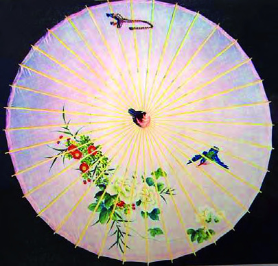
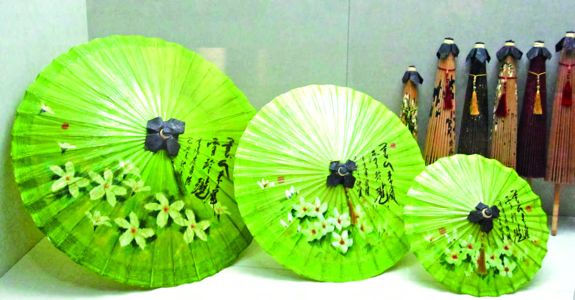
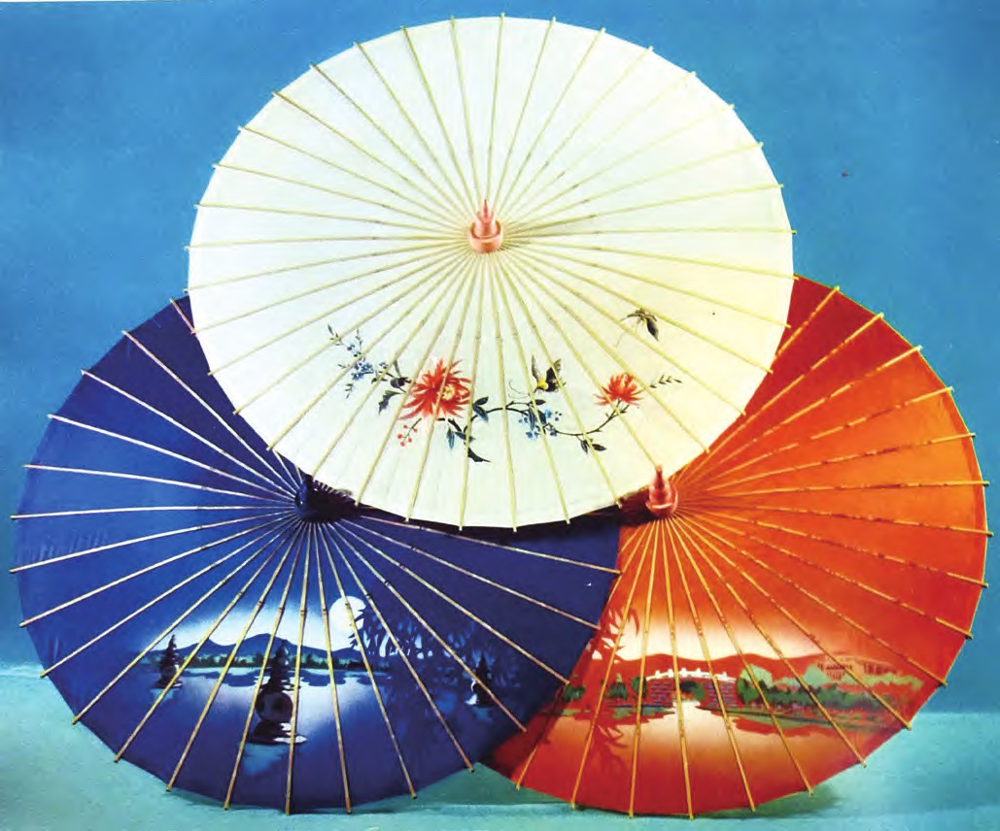
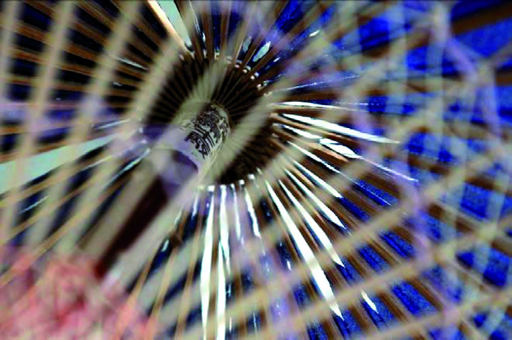
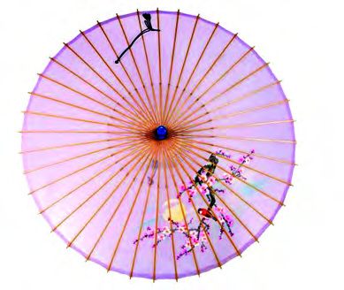
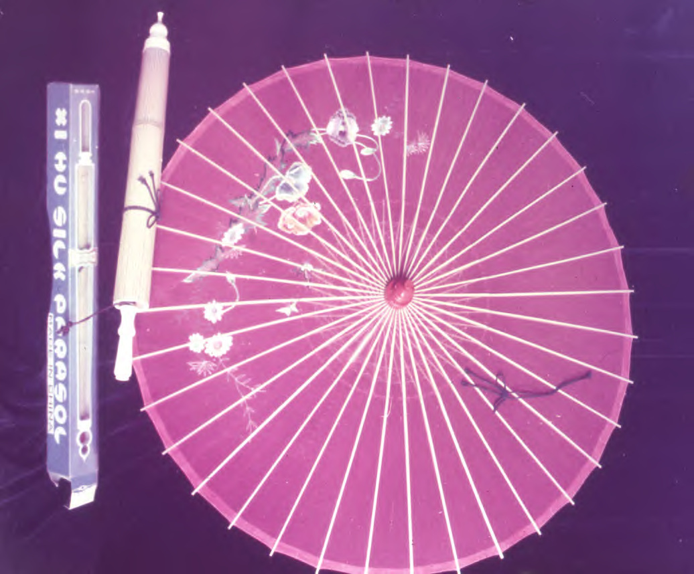
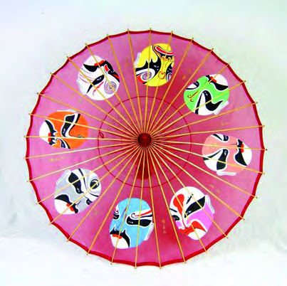
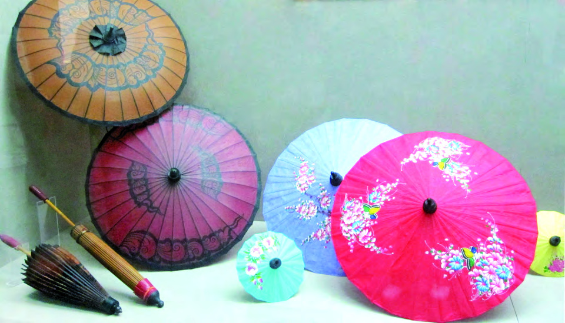
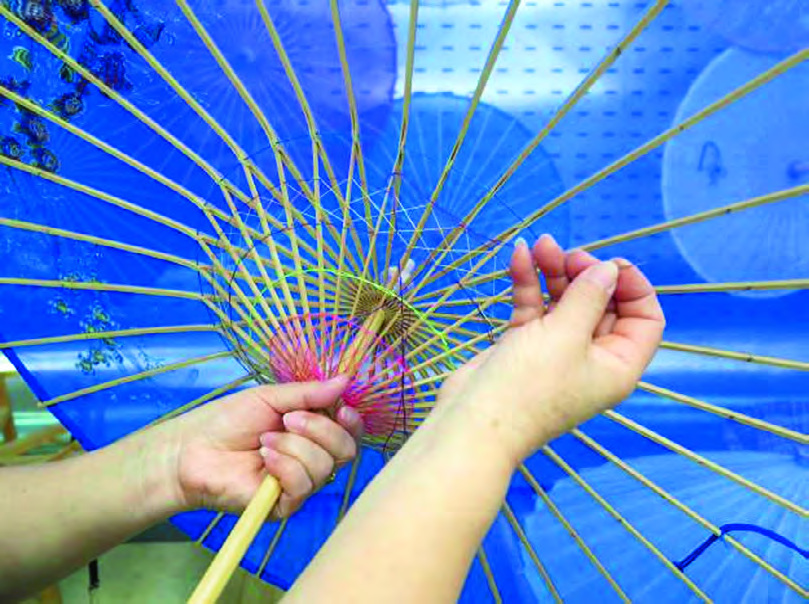
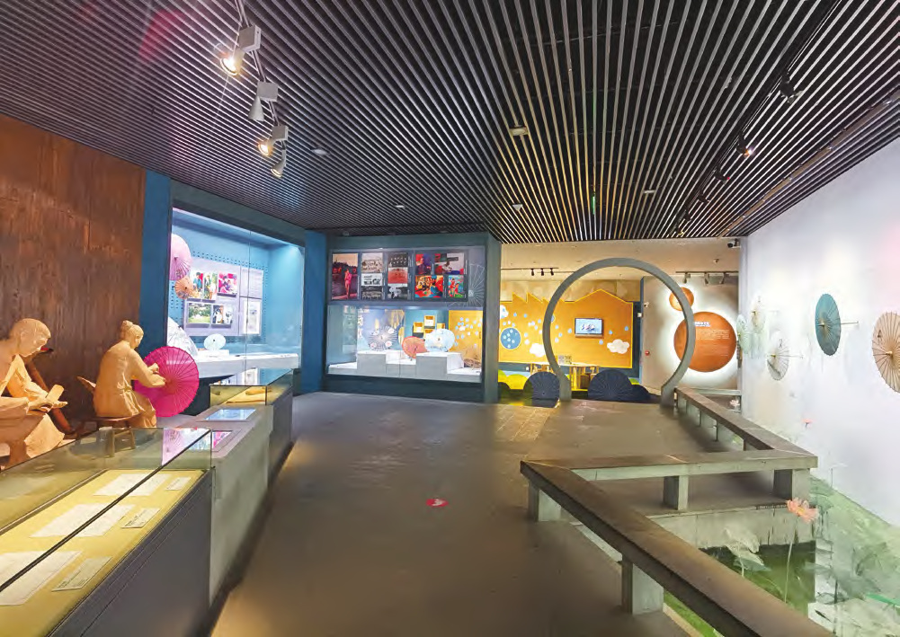

先看一把伞
竹、绸与西湖风景
展开一把绸伞，可以看到长骨托住伞面，短骨连接活动伞巢。推起或拉下伞巢，短骨改变角度，带动整圈伞骨张开或收拢；骨架、伞巢与绸面一起决定伞面的弧度和开合手感。
西湖绸伞既能遮雨纳凉，也用于舞蹈、杂技、陈设和礼赠。不同用途对伞面尺寸、重量、骨数和装饰有不同要求。伞面不只是承载图案的“画布”，也参与整把伞的结构与开合。
伞面常见刷花、绘花、绣花三种装饰。西湖山水、花鸟与人物被安排在一圈圈扇区中；撑伞时画面随伞面展开，合伞时又沿着骨线折叠收拢。
撑开一把伞，收拢一节竹。
以竹为骨，以绸为面。一伞撑开江南烟雨，一笔绘就西湖风华。
西湖绸伞 · 工艺长卷
1932 年，杭州都锦生丝织厂以江南丝绸和富阳淡竹试制绸伞。伞面绘入西湖风景，撑开映出湖山，收拢如一节竹。

先看一把伞
展开一把绸伞，可以看到长骨托住伞面，短骨连接活动伞巢。推起或拉下伞巢，短骨改变角度，带动整圈伞骨张开或收拢；骨架、伞巢与绸面一起决定伞面的弧度和开合手感。
西湖绸伞既能遮雨纳凉，也用于舞蹈、杂技、陈设和礼赠。不同用途对伞面尺寸、重量、骨数和装饰有不同要求。伞面不只是承载图案的“画布”，也参与整把伞的结构与开合。
伞面常见刷花、绘花、绣花三种装饰。西湖山水、花鸟与人物被安排在一圈圈扇区中；撑伞时画面随伞面展开，合伞时又沿着骨线折叠收拢。
撑开一把伞，收拢一节竹。
一 · 创制与流传
1932 年，都锦生丝织厂受日本绢伞启发，决定以杭州周边淡竹制骨、用丝绸张面，并把西湖十景绘上伞面。竹振斐等制伞工匠参与试制，竹骨结构与风景装饰由此结合成一件能开合的西湖工艺品。
1935 年前后，毛家埠出现专门制作绸伞的“竹氏伞作”。新中国成立后，制伞研究和产品调整继续推进，伞骨数量、刷花套版、伞头与柄部造型逐渐形成更稳定的样式。
发展初期，年产量曾达到约 60 万把，其中近七成销往欧亚市场。20 世纪 60 年代产量逐渐下降，1970 年停产；1972 年恢复生产后，年产量约三四千把。淡竹供应有限、工时较长，也让手工制作难以大规模展开。
2008 年，西湖绸伞制作技艺列入国家级非物质文化遗产名录。2011 年，杭州中国伞博物馆启动保护项目并建立资料库；实物、影像和工艺记录让不同年代的伞样与做法能够继续被认识。

二 · 材料选择
伞面常选用杭州、嘉兴、湖州一带出产的丝绸，如电力纺和乔其纱。面料要织得细密，同时保持轻薄、柔软、透光；天蓝、新绿、玫瑰、淡黄等颜色在绸面上显得清润。
制骨多用淡竹。工匠先“望、抚、敲、量”，挑选竹龄约三至五年、色泽均匀、少斑疤的长竹节，常在霜降后采伐。合用竹材直径约四至五厘米，竹节间距约二十五至二十六厘米。
竹筒要顺着纹理劈成细长的篾青与篾黄，再加工成长骨和短骨。常见伞架由三十二或三十六根骨条构成；骨条宽度、竹节平整度和长短比例都会影响伞面是否匀称、收拢是否圆整。
上伞面前，缝好伞角的绸料会绷在直径约八十一厘米的竹圈上。工匠对准伞心、整理经纬，再把绸面固定到长骨上；竹、绸与木制伞头、伞柄各有尺寸，最终要在同一次开合里配合妥当。

三 · 伞骨加工
伞骨加工从分料、刮青和劈竹开始。工人把竹材分作长骨与短骨：长骨要刮净竹青、劈开并开槽，短骨则按长度劈分、钻孔，再依照连接次序编排。
一节淡竹可以劈成三十二或三十六根骨条。常用骨条约四毫米宽；若骨条数量增加，工匠还要“抽骨”，使竹筒合拢后保持圆润，竹节连接处也尽量平整。
每根骨条上的孔、槽和接合位置都要准确，长骨托面，短骨带动开合。它们先组成上下两圈，再按放射方向排齐；编号留下来的篾青另行保存，等到伞面成形后再贴回原骨。
验骨时会检查竹篾厚薄、长短和开槽位置是否一致。细微误差累积到一整圈骨架上，就会让伞面偏斜、开合发涩；因此，外形整齐和活动顺畅要同时做到。
先修骨，再谈伞面的圆与匀。

四 · 伞巢与套合
短骨连接活动伞巢与长骨，推拉伞巢时，短骨角度随之变化，再带动长骨张开或归拢。伞巢的行程、短骨长度和长骨弧度需要一起调校，单个部件合格并不代表整伞开合顺畅。
装配时，长短骨按环向顺序排布并逐段检查间距。工人试撑后观察伞面是否偏斜、骨条是否松晃，再调整连接与形态，让各扇区尽量均匀受力。
主轴、上下伞巢、伞头和伞柄把手部推拉传到整副骨架。伞体既要打开时保持支撑，也要闭合时顺着伞轴归束，轻便感来自这些活动部件的配合。
这套伞骨采用套合结构，不靠胶水把活动部件粘死。连接处保留转动空间，推拉伞巢时长短骨能够连续改变角度；尺寸配合得当，展开有支撑，收拢也不滞涩。

五 · 绸面准备
伞面先缝好伞角，再平绷在竹制绷圈上。工匠把经纬线拉直、校准圆心，换好腰边线后，才能把绸料准确地上到骨架。
上架时，绸面逐段粘在长骨上，骨档要匀、胶层要薄。待胶面稳定，工人沿伞缘把多余面料修成圆形，再将边缘向内折贴，形成平整的糊边。
边缘太宽会显得厚重，太窄又容易露出线脚。剪边之后还要顺着骨线检查每个扇区，确保撑开时圆面连续、合伞时折痕能够整齐归拢。
伞面上架后，短骨孔位还要穿线固定。细密的缝线把柔软绸面稳稳带在骨架上，也让伞缘在反复开合时不易松脱。

六 · 伞面纹样
伞面装饰有画花、刷花、绣花三种传统方式。乔其纱轻薄、经纬较疏，画师要控制笔势、水分和速度，才能让山水、花鸟的线条稳稳落在绸面上。
刷花先把图稿分成不同颜色，刻成镂空版后逐层套印。每次都要重新对准伞面，颜料才能接出清晰的轮廓；多层色彩透过薄绸显现，远山和花木便有了深浅。
刺绣则以针线组织图案，盘金线或彩色丝线会在伞面形成起伏。花线沿短骨穿过细小孔位，一把伞通常要来回穿约 296 针，线脚均匀，伞缘才显得整齐。
构图时先标出伞心、骨线与伞缘，再把亭台、湖面、花木安排到不同扇区。画面既要在撑开时连贯，也要避开容易被折痕压住的位置；每一笔都要顺着伞面的弧度落下。
实物图版 · 不同装饰面貌

细密线脚连接伞缘与短骨，让伞面经得住反复开合。
七 · 刷花与彩绘
刷花把一幅图案拆成不同颜色的版片。工匠依次定位、轻刷和补色，刻版的镂空边缘留下清楚轮廓，层层套色则让湖面、远山和花木显出前后关系。
手绘直接面对轻薄的乔其纱，水分过多容易洇开，笔触太干又会断续；绣花则靠针脚与线材表现质感。三种做法需要适应绸料软、伞面弯、骨线多的特点。
三潭印月、平湖秋月、柳浪闻莺和花港观鱼都曾成为伞面题材。画师安排景物时会避开伞骨交界，把连续的山水拆进不同扇区，让伞转动时仍能读出湖景层次。
今天的设计也把剪纸轮廓、扎染色彩和描金细节带到伞面上。数字草图经过人工调整后，再用传统喷绘转印并以毛笔收细节；面向孩子的微型材料包，则让选竹、装架和绘饰变成亲手体验。

八 · 贴青与收拢
制骨时剥下的竹青会逐根编号，待伞面装好并干燥后，再按记号贴回原来的骨条。青篾薄而柔韧，既衬出伞骨轮廓，也让合拢后的伞体重新呈现圆竹形态。
贴青要做到“三齐一圆”：伞尖、竹节和下缘对齐，收伞后整体圆稳。若把青篾错贴到别的骨条上，伞面就可能鼓包、偏斜，合起时也难以收成整齐的一束。
贴好之后，工匠会反复开合和修形，检查骨条是否顺直、绸面是否夹在竹骨之间、伞缘是否整齐。只有每根青篾都回到原位，开伞和收伞才能保持同样利落。
这道工序把制骨时的编号、伞面安装和成品修形连在一起。撑开时，竹青顺着放射骨线勾出轮廓；收拢时，青篾又随伞面折痕归拢到竹筒般的形态。
撑开为伞，收拢成竹。

九 · 传承与观看
制伞传承人宋志明于 1977 年进入工美研究所学习制伞，此后长期从事绸伞制作。保护这门手艺，既要保存伞作与工艺资料，也要让制作知识能在新的学习环境里继续流动。
他师从老艺人竹振斐学习五年，后来办厂、带徒并持续改进伞面材料和装饰方法。号竹、验骨等经验往往靠反复示范和手上比较传授，师徒共同操作也是技艺延续的一部分。
宋志明整理并保存 20 世纪 50 年代以来的绸伞实物与档案，也与高校合作开展技能培训。馆藏让人看到成品形态，资料保留发展脉络，教学则把制伞方法带回实际操作。
观看时可以沿着一把伞追踪工序：长短骨怎样成架，绸面怎样上架，花线如何穿过短骨，竹青又怎样回到对应位置。博物馆的现场展演和体验还会开放伞面绘画、穿花线、贴青等环节，让手上的动作与成品结构对应起来。
十八道工序
制伞流程从选竹开始，经过伞架、绸面、装饰与装配。十八道工序环环相扣，每一步都为下一步留出准确的位置。
工匠完成一道工序，会检查位置、松紧与形态。伞面是否圆整、伞巢是否顺滑，来自一连串细致的校准和试撑。
十 · 纹样与观看
伞面图案从西湖山水、花鸟人物，延伸到戏曲、服饰与日常生活。萧山万缕丝、桐乡蓝印花布、扎染布和萧山花边都曾被用于伞面，让传统竹骨承接不同的织物质感。
新旧技法可以组合使用：绘花与绣花、刷花与刺绣相互补充，剪纸轮廓、描金线条也能成为新的装饰语言。图案虽有变化，仍要绕开伞骨交界，照顾伞心、伞缘和折叠位置。
俯看时，放射的骨线把圆面分成扇区；从侧面看，伞面弧度又会改变景物的比例。设计者要顺着骨架安排图案，使它在撑开时连贯、转动时有层次、合拢时不易磨损。
近年来，年轻设计者尝试把数字草图、传统喷绘和手工细描串在一起，也把四季花木、动漫人物和当代生活带上伞面。新图案经手工调整后落在丝绸上，制作时仍要经得住开合与折叠。
十一 · 收藏与养护
保护一把绸伞，要连同伞面、竹骨、木制伞头和穿线装饰一起记录。不同年代的样式、材料选择与工序变化也要留下图像和文字，才能看见一门手艺如何随生活改变。
2024 年施行的杭州地方标准 DB3301/T 0442—2024，将产品结构、制伞技艺、质量要求与传承保护纳入同一套规范，并明确劈青、贴青、刷花等核心做法。
标准帮助学习者看清步骤，也为生产和修复提供共同尺度；核心技艺得到保护，核心之外仍可改良材料和图案。传统因此既有可循的根，也留有继续生长的空间。
博物馆的展演和体验把记录带回手上：观众能观看现场制作，也能尝试伞面绘画、穿花线或贴青。实物、影像、标准与动手实践放在一起，才能看见一把伞怎样从材料变成日用品与工艺品。

正在布置悬伞街景…
还没有保存的绸伞